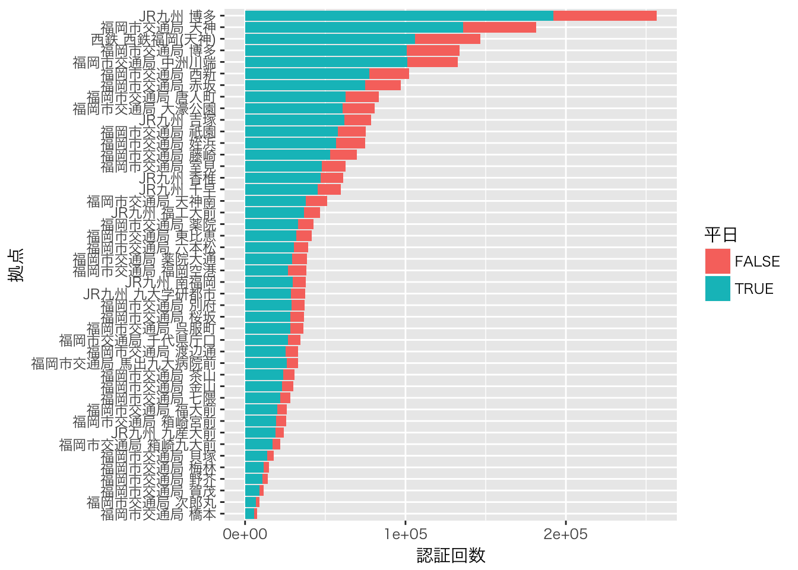
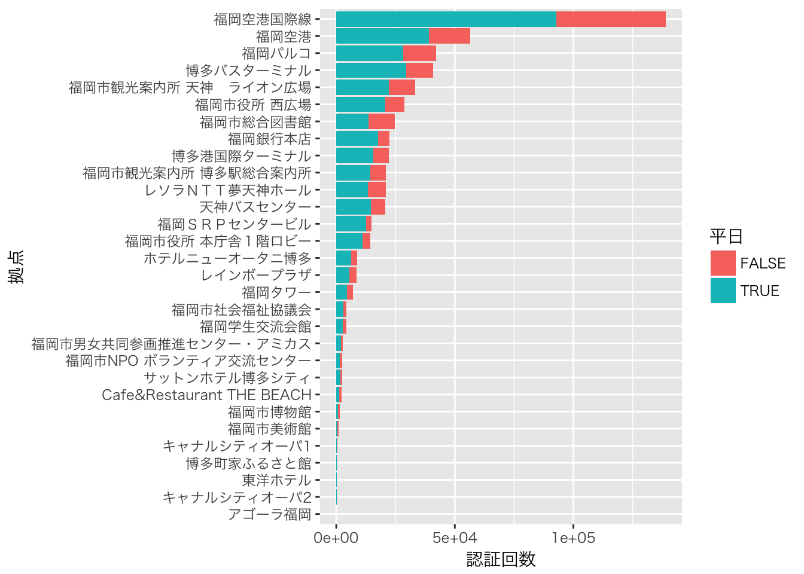
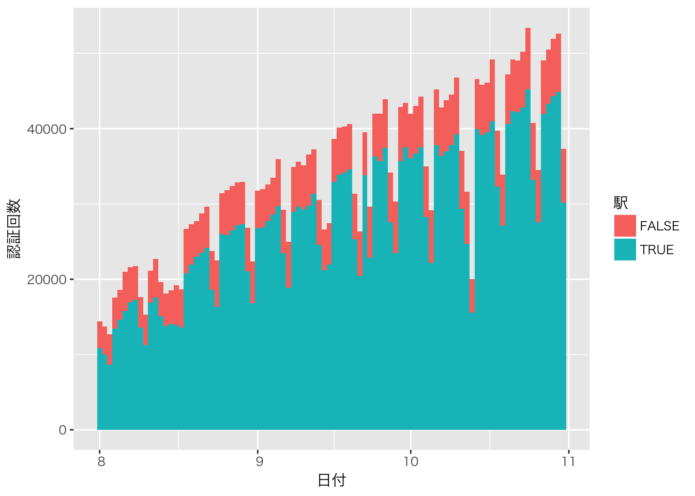
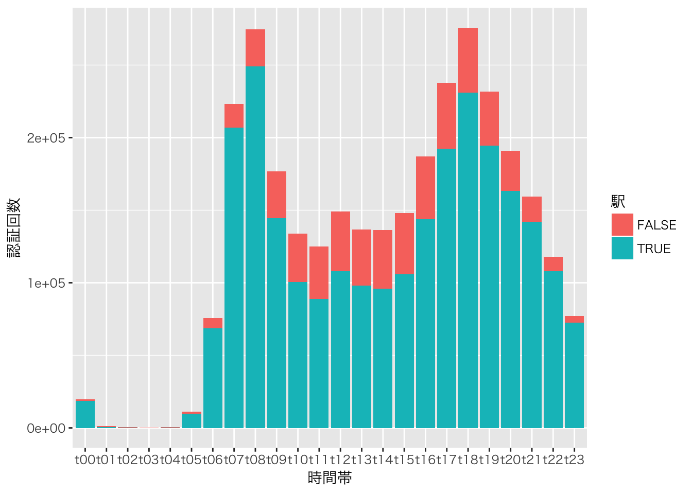

福岡市のCKANに， Fukuoka City Wi-Fi 利用状況という 興味深いデータが掲載されていました。このデータをRで少し触ってみました。
以下のライブラリを使います。
library(readr)
library(data.table)
library(Nippon)
library(ggplot2)データは，Fukuoka City Wi-Fi各拠点の1時間ごとの利用状況（認証回数）のデータです。 2015年8月〜10月の3カ月分のデータが公開されていました（2015年12月17日現在）。
まずはデータをダウンロードし，整形します。 さらに，拠点が鉄道駅かどうか，その日が休日（土日祝日）に当たるかというダミー変数を付け加えておきます（祝日の判定のために，Nipponパッケージのis.jholiday()関数をすべての日付に適用するという効率の悪いことをやっているので，ちょっと処理に時間がかかります）。
filename <- c(
"http://ckan.open-governmentdata.org/dataset/67ac28a6-8e56-466b-957b-c41300da3d58/resource/44b727d5-19ae-4275-bb98-8bd32211a671/download/201408access.csv",
"http://ckan.open-governmentdata.org/dataset/67ac28a6-8e56-466b-957b-c41300da3d58/resource/50c81208-2909-477c-a1f5-6759c2ce5792/download/201409access.csv",
"http://ckan.open-governmentdata.org/dataset/67ac28a6-8e56-466b-957b-c41300da3d58/resource/12e32ad3-1eda-4bc1-a86c-4f5f533e083a/download/201410access.csv"
)
d <- lapply(filename, read_csv, col_types=paste0("cc", paste(rep("i", 25), collapse="")))
d <- rbindlist(d)
colnames(d) <- c("name", "date", "total", paste0("t", sprintf("%02d", 0:23)))
d$total <- NULL
d$name <- sjis2utf8(d$name)
d$date <- sjis2utf8(d$date)
d <- d[d$date!="合計",]
d$date <- as.Date(d$date, "%Y%m%d")
d$station <- grepl("駅$", d$name)
d$name <- sub(" ", " ", d$name)
d$name <- sub("駅$", "", d$name)
d$weekday <- !(is.jholiday(d$date) | (weekdays(d$date) %in% c("土曜日", "日曜日")))グラフはggplot2で描くので，データをmeltしておきます。
md <- melt(d, id.vars=c("name", "date", "station", "weekday"))グラフに日本語を表示するためのおまじない。
old <- theme_set(theme_gray(base_family="HiraKakuProN-W3"))まずは認証回数ランキングから。 赤は休日，青は平日の拠点ごとの認証回数を示しています。 駅では，やはり博多，天神での利用が多いことがわかります。 市営地下鉄七隈線での利用は低調のようです。
ggplot(md[md$station,], aes(x=reorder(name, value, sum), weight=value, fill=weekday)) +
geom_bar() + coord_flip() + labs(x="拠点", y="認証回数", fill="平日")
駅以外では，福岡空港での利用が目立っています。
ggplot(md[!md$station,], aes(x=reorder(name, value, sum), weight=value, fill=weekday)) +
geom_bar() + coord_flip() + labs(x="拠点", y="認証回数", fill="平日")
次に，時系列での認証回数の推移を見てみましょう。 2015年8月1日から10月31日までの間，Fukuoka City Wifi の認証回数は上昇傾向にあったことがわかります。 休日は平日に比べ認証回数が少ないこと，またそのような休日と平日の差は駅以外の拠点ではあまり見られないこともわかります。
ggplot(md, aes(x=date, weight=value, fill=station)) + geom_bar(binwidth=1) +
labs(x="日付", y="認証回数", fill="駅")
最後に時間帯別の認証回数のグラフを見てみましょう。 朝と夕方に利用のピークがありますが，そのようなピークは， 駅以外の施設での利用や休日での利用にはあまり見られないようです。
ggplot(md, aes(x=variable, weight=value, fill=station)) + geom_bar() +
labs(x="時間帯", y="認証回数", fill="駅")
ggplot(md, aes(x=variable, weight=value, fill=weekday)) + geom_bar() +
labs(x="時間帯", y="認証回数", fill="平日")もう少しいろいろ詳しく見てみたいところですが，今日はここまで。